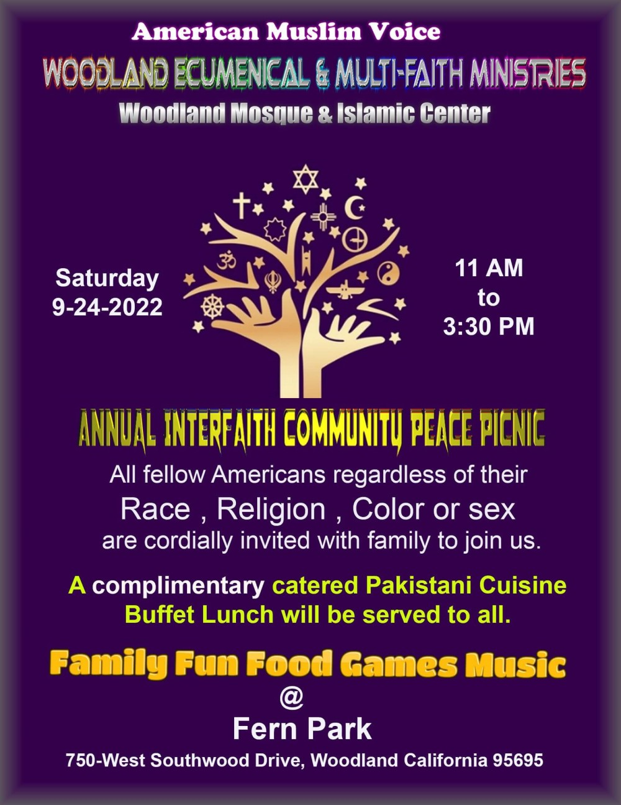
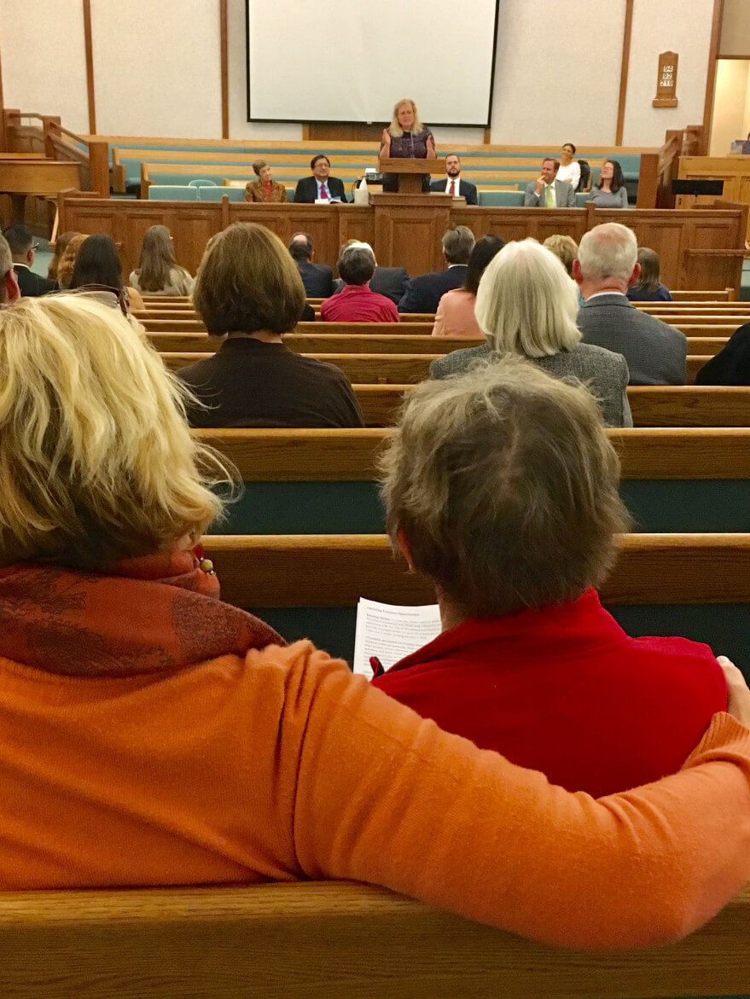

"We can only make it together - we can only be safe together. We can be prosperous only together. We can survive only together. We can be human only together." -- South African Anglican Bishop Desmond Tutu

Thanksgiving Service
This year's WEMM Thanksgiving Service will be held on November 20th, 4 pm, at the Woodland Christian Church.

Clergy Corner
Each week, Woodland’s Daily Democrat, our local paper, publishes the Clergy Corner, written by various faith leaders. Explore by title, author, or faith community.